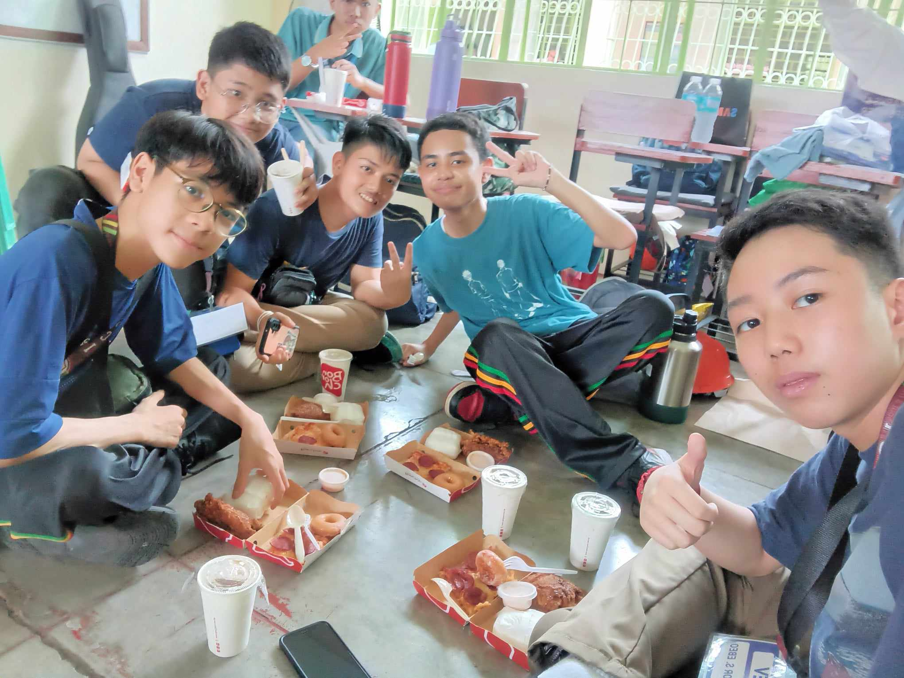
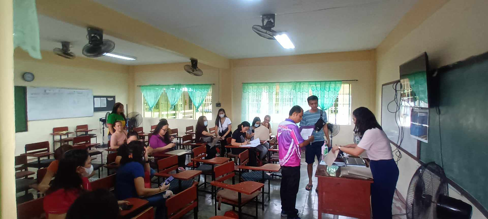

| You woke up and viewed : |
 |
| Intramurals 2024 (Advanced Games, Volleyball) October 2, 2024 |
This was taken after dismissal during the Advanced Games of the Intramurals 2024 Volleyball event. |
| Intramurals Opening October 3, 2024 |
This is a picture of the Intrams Opening Program, The Intramurals 2024 event officially opened with a cheering contest among the Senior High School students and the Mr and Ms. Intramurals event, where our team, Yellow, won! |
| Teachers Day 2024 October 4, 2024 |
 This is a selfie of me and my friends during the Teacher's Day Program, We had mini teachers, where instead of the teachers discussing, volunteers would teach the lessons to the students. After the mini teachers, the class sung a song for the teachers, our adviser, Ms. Mei, and our AP and ICT teacher, Mr. Calimbas and Ms. Uminga., followed by a lot of food, like fried chicken, pizza, mini donuts, and drinks. Ending the program, we played games. The teachers day program was successful as everyone had a lot of fun! |
| 1st Quarter Card Distribution October 11, 2024 |
 This is taken during the 1st Quarter Card Distribution. I managed to make it with Honors! Here is a bonus video of my classmate Brylle Leonardo. |
| Intramurals Closing October 21, 2024 |
This is when the Intramurals 2024 had come to an end. All games were finished and this is when all winning teams were awarded for their wins on the games. |
| English Month Opening November 4, 2024 |
During this was the opening of the English Month. Students dressed up as a book character, and per section, one student would be awarded for having the best costume! |
| AP Month Historical Icon, Green Couture November 8, 2024 |
 Each section would use recycled materials to make a costume of a historical icon. In this picture, my classmate, Izza Enriquez would be our representative for this event! |
| Entrepreneur Fair November 19, 2024 |
This picture shows me and my friends playing a game during the Entrepreneur Fair of the Senior High School. We managed to win one plushy for each of us! |
| Booklandia November 19, 2024 |
This event involved a pair of a boy and a girl that would dress up as book characters. This picture shows our representatives, Anthony Ferrer and Jewel Lim, dressed up as Zuko and Katara from Avatar! |
Looking for something else?